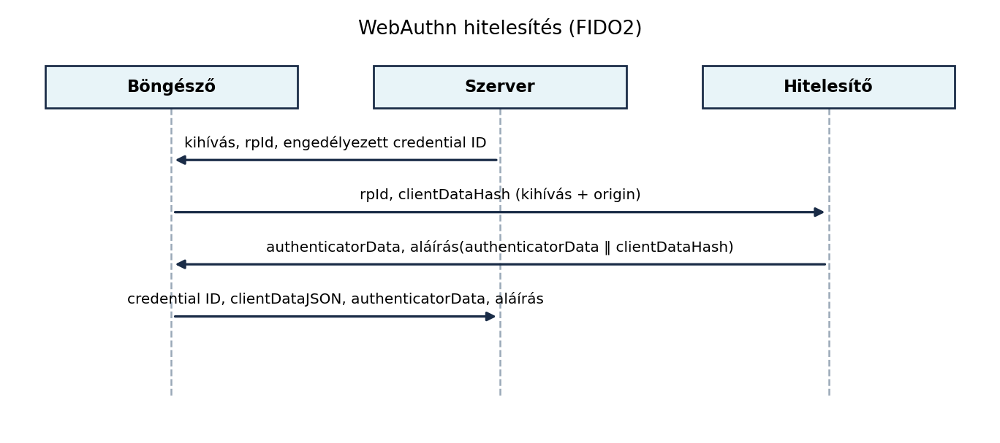

Egy jelszó ellopása után a támadó korlátlanul hozzáfér a fiókhoz, amíg a felhasználó nem változtatja meg. Ezt a problémát enyhíti a kétfaktoros hitelesítés (two-factor authentication, 2FA): a jelszó mellett egy második, rövid élettartamú bizonyíték is szükséges. Az egyik legelterjedtebb második faktor az egyszeri jelszó (one-time password, OTP), amely egyetlen alkalommal használható, és rövid időn belül lejár. Az SMS-ben küldött kódok helyett ma már gyakran HMAC-alapú számlálót (HOTP) vagy időalapú kódot (TOTP) használnak, például hitelesítő alkalmazásokban. Bár a TOTP jelentősen erősebb a csak jelszavas belépésnél, továbbra is ki van téve az adathalászatnak (phishing), mert a felhasználó egy hamis oldalon is beírhatja a kódot. Erre a problémára ad választ a FIDO2/WebAuthn szabványcsalád, amely nyilvános kulcsú kriptográfiával és eredethez kötéssel (origin binding) megakadályozza, hogy egy hamis oldal használni tudja a hitelesítő adatot.
Képzeljük el, hogy a felhasználó egy banki oldalra lép be. A hitelesítő alkalmazásban megjelenik egy hatjegyű szám, amelyet beír a böngészőbe. A szám 30 másodpercenként változik. Egy adathalász oldal ezt a kódot is elkérheti, és azonnal továbbíthatja a valódi banknak. A WebAuthn ezzel szemben a böngészőn belül végzi a kriptográfiai műveletet: a felhasználó csak megerősíti a bejelentkezést, de a hitelesítő eszköz olyan aláírást készít, amely a böngésző által beírt kliensadaton keresztül kötődik a weboldal eredetéhez (origin). A hamis oldal hiába kapja meg az aláírást, azt a valódi bank nem fogadja el, mert az aláírt kliensadatban a hamis oldal origin szerepel.
Az alábbi diagram a WebAuthn hitelesítés egyszerűsített üzenetváltását mutatja:

A böngésző csak az oldal saját domainjéhez tartozó rpId-t engedi
kérni, és az oldal valódi originjét beírja a
clientDataJSON-be. A hitelesítő az rpId-hez tartozó
kulccsal írja alá az authenticatorData-t (benne az rpId
hash-ével) és a clientDataJSON hash-ét; az origint maga nem
látja. Így a támadó oldal által megszerzett aláírás nem értékes a valódi
szerver számára.
Definíció. HOTP (HMAC-based One-Time Password). Legyen egy titkos kulcs, egy 8 bájtos számláló (counter), és a kívánt számjegyek száma (általában 6). A HOTP értéket az RFC 4226 szerint a következőképpen számoljuk:
0x0f maszkkal, azaz
.0x7f maszkkal
(bitenkénti ÉS) távolítsuk el a legfelső bitet, hogy 31 bites
előjeltelen számot kapjunk.Definíció. TOTP (Time-based One-Time Password). A TOTP az RFC 6238 szerint a HOTP időalapú változata. Legyen az aktuális Unix idő (másodpercben), a kezdő időpont (gyakran ), és az időlépés hossza (általában másodperc). Ekkor
A az alsó egészrész, tehát a számláló az aktuális időablak sorszáma.
Definíció. WebAuthn/FIDO2 hitelesítés. A WebAuthn
(W3C ajánlás) és a FIDO2 egy nyilvános kulcsú hitelesítési
keretrendszer. Regisztráció során a hitelesítő (például telefon,
biztonsági kulcs) generál egy kulcspárt. A privát kulcs soha nem hagyja
el az eszközt; a szerver a nyilvános kulcsot és egy hitelesítő
azonosítót (credential ID) tárol. Belépéskor a szerver egy friss
kihívást (challenge) küld. A hitelesítő aláírja az
authenticatorData-t (benne az rpId hash-e) és a
kliensadatok (clientDataJSON, benne a kihívás és a weboldal
origin) hash-ét. A szerver ellenőrzi az aláírást a tárolt nyilvános
kulccsal, és így meggyőződik arról, hogy a felhasználó birtokolja a
hitelesítőt, és a kérés az ő saját originjéről érkezett.
A szabványos tesztvektorok közül vegyük a SHA-1 alapú TOTP-t,
számjeggyel,
és
paraméterrel. A tesztkulcs ASCII karakterekből áll:
12345678901234567890 (20 bájt). Számítsuk ki a TOTP kódot
másodperc esetén.
Az alábbi ábra a pontos tesztvektor bájtjain mutatja a dinamikus csonkolást: az utolsó bájt alsó 4 bitje adja az offsetet, az onnan kezdődő négy bájtból a legfelső bit levágása után 31 bites szám, majd jegyű kód lesz.
00 00 00 00 00 00 00 01) HMAC-SHA-1 értéke
75a48a19 d4cbe100 644e8ac1 397eea74 7a2d33ab (Pythonnal,
hmac/hashlib/struct modulokkal
számolva).0xab, alsó 4 bitje 0xb = 11, tehát az offset
11. A 11–14. bájt 0xc1 0x39 0x7e 0xea. A legfelső bájt
maszkolása: 0xc1 & 0x7f = 0x41, így a 31 bites érték
0x41397eea = 1 094 287 082.94287082, egyezésben az RFC 6238 tesztvektorával. A
példa jól mutatja a 0x7f maszk szerepét: a
0xc1 legfelső bitje 1, a maszk nélkül a szám nem lenne 31
bites.A HOTP biztonsága azon alapul, hogy a HMAC kimenete a kulcs ismerete nélkül megjósolhatatlan. Ha a támadó nem ismeri -t, akkor a kódot csak véletlen találgatással tudja eltalálni; számjegy esetén a siker valószínűsége próbálkozásonként . A dinamikus csonkolás célja, hogy a HMAC 20 bájtjából egy rövid, ember által beírható kódot nyerjünk úgy, hogy a csonkolás ne szivárogtasson könnyen kihasználható információt a HMAC-ról. A gyakorlatban a szerver korlátozza a próbálkozások számát, és a HOTP számlálóját minden sikeres azonosítás után növeli, így egy lehallgatott kód nem használható újra.
A TOTP a HOTP-t időalapú számlálóval kombinálja. A kód egy hosszúságú időablakban érvényes. Mivel a kliens és a szerver órája eltérhet, a szerver gyakran elfogadja a szomszédos időablakokat is (például lépés), és a rendszer az óraeltolódást automatikusan korrigálja. Ez a rugalmasság azonban növeli a találgatás esélyét, ezért a próbálkozások számát továbbra is korlátozni kell.
Továbbvitt eredmény. A TOTP időalapú, HMAC-ból származtatott kódját a 2. projekt: saját hitelesített kulcscsere-protokoll tervezése és elemzése alfejezetben hitelesítési komponensként használhatjuk fel; az eredethez kötés fogalmát a A kriptográfia fogalmi térképe és döntési fája alfejezet foglalja össze.
A WebAuthn biztonsága a nyilvános kulcsú aláíráson és a
kihívás–válasz protokollon nyugszik. A hitelesítő privát kulcsa az
eszközön marad, még a szerver feltörése sem fedi fel. A regisztráció
során a szerver a nyilvános kulcsot és a credential ID-t tárolja.
Hitelesítéskor a szerver friss, véletlen kihívást küld; a hitelesítő
aláírja az authenticatorData-t (benne az rpId hash-e) és a
kliens adatainak (client data) hash-ét. A kliens adatok tartalmazzák a
weboldal originjét, például https://bank.example; ezt a
böngésző írja be. Az aláírás ellenőrzésekor a szerver ellenőrzi az
origint és az rpIdHash-t. Így egy adathalász oldal nem tud a valódi bank
számára használható aláírást szerezni, mert az aláírt kliensadatban a
hamis oldal origin szerepel.
A TOTP ellen a leggyakoribb támadás az adathalászat (phishing): a támadó egy megtévesztő oldalon elkéri a felhasználó jelszavát és a TOTP-kódot. A támadó azonnal beírja a valódi oldalon, mielőtt a kód lejárna. Ezt valós idejű továbbításnak (real-time phishing, reverse proxy) nevezik. A TOTP nem tudja megakadályozni, mert a kód egy szimpla, hordozható számsor.
A WebAuthn ezzel szemben véd: a böngésző csak az oldal saját
domainjéhez tartozó rpId-t engedi kérni, és az oldal valódi originjét
beírja a clientDataJSON-be. A hitelesítő az rpId-hez
tartozó kulccsal írja alá az authenticatorData-t (benne az
rpId hash-ével) és a clientDataJSON hash-ét. Egy adathalász
domainen a böngésző nem kérhet a bank rpId-jére szóló aláírást; ha a
proxy a bank kihívását továbbítja, a clientDataJSON-ben az
adathalász origin áll, és a bank szervere ezt elutasítja. Ez az
eredethez kötés lényege.
Egy közepes méretű vállalatnál a biztonsági csapat úgy dönt, hogy minden dolgozónak kétfaktoros hitelesítést vezet be a vállalati VPN-hez és a felhős szolgáltatásokhoz. Első lépésben TOTP-alapú hitelesítő alkalmazást választanak (például Microsoft Authenticator, Google Authenticator). A regisztráció során minden dolgozó egy QR-kódot olvas be, amely a titkos kulcsot tartalmazza. A rendszer a belépéskor a jelszó mellett a 30 másodpercenként változó kódot kéri.
A bevezetés után hat hónappal a csapat adathalász e-mailek számának növekedését észleli. A dolgozók egy része hamis SharePoint-oldalakon adja meg a jelszavát és a TOTP-kódját. A támadók valós időben továbbítják a kódokat. Ezért a vállalat fokozatosan áttér a FIDO2 alapú passkey hitelesítésre. A dolgozók telefonjukon vagy laptopjukon hoznak létre passkey-t, amely szinkronizálható a felhős kulcstárolóval. A belépés így nem igényel beírt kódot, és a phishing-támadások hatástalanná válnak, mert a hamis oldal nem tud használható aláírást szerezni.
A tanulság: a TOTP jó első lépés, de adathalászat ellen a WebAuthn/passkey a robusztusabb választás.
A következő oktatási kód a HOTP és TOTP algoritmust valósítja meg az RFC 6238 tesztvektorával. A kulcs rögzített tesztvektor, ezért csak tesztelésre használható.
# OKTATÁSI CÉLRA – NEM ÉLES HASZNÁLATRA
import hmac
import hashlib
import struct
def hotp(key: bytes, counter: int, digits: int = 6) -> str:
# A számláló 8 bájtos, big-endian a HOTP szabvány szerint
c = struct.pack(">Q", counter)
hs = hmac.new(key, c, hashlib.sha1).digest()
offset = hs[-1] & 0x0f
binary = ((hs[offset] & 0x7f) << 24 |
hs[offset + 1] << 16 |
hs[offset + 2] << 8 |
hs[offset + 3])
otp = binary % (10 ** digits)
return f"{otp:0{digits}d}"
def totp(key: bytes, t: int, step: int = 30, t0: int = 0, digits: int = 6) -> str:
counter = (t - t0) // step
return hotp(key, counter, digits)
# RFC 6238 tesztvektor: SHA-1, 8 jegyű TOTP
key = b"12345678901234567890"
print(totp(key, 59, digits=8)) # várt: 94287082
print(totp(key, 1111111109, digits=8)) # várt: 07081804
print(totp(key, 1111111111, digits=8)) # várt: 14050471Várt kimenet:
94287082
07081804
14050471A kód a HMAC-SHA1 kimenetéből a szabványos dinamikus csonkolással állítja elő a kódot. Éles rendszerben a kulcsot sosem írjuk be a forráskódba, és a TOTP ellenőrzését szerveroldalon, a próbálkozások korlátozásával végezzük.
clientDataJSON-ben szereplő origin értékét,
akkor egy másik oldalról származó aláírás is elfogadhatóvá válik. Az
origin-ellenőrzés a WebAuthn biztonságának alapja.1. feladat (A)
Adott a TOTP paraméter
s,
,
.
Hányas számlálóval
()
hívjuk meg a HOTP-t? Hány másodpercig érvényes egy kód?
2. feladat (A)
Egy TOTP-rendszer 6 jegyű kódokat használ. Mennyi a valószínűsége, hogy
egy támadó egyetlen próbálkozással eltalálja a kódot? Ha a szerver 5
próbálkozást enged, mennyi a teljes siker valószínűsége (feltéve, hogy a
próbálkozások függetlenek)?
3. feladat (B)
Adott egy HMAC-SHA1 kimenet 20 bájtban, hexadecimálisan:
1f 86 98 69 0e 02 ca 16 61 85 50 ef 7f 19 da 8e 94 5b 55 5a.
Számítsd ki a dinamikus csonkolást, és add meg a HOTP értéket
számjeggyel.
4. feladat (B)
Írd le a WebAuthn regisztráció folyamatát: milyen kulcsok keletkeznek,
mi kerül a szerverre, és mi marad a hitelesítő eszközön? Mi a szerepe a
credential ID-nek?
5. feladat (C)
Magyarázd el, miért nem elegendő a TOTP a phishing ellen, és miért véd a
WebAuthn eredethez kötése. Fogalmazz meg egy támadási forgatókönyvet,
amelyben a támadó valós időben továbbítja a TOTP-kódot, és mutasd meg,
hogy ugyanez a forgatókönyv WebAuthn esetén miért hiúsul meg.
6. feladat (D)
Egy játék TOTP-szerver 6 jegyű kódokat fogad el, és nem korlátozza a
próbálkozások számát. Írj egy rövid Python szimulációt, amely
megbecsüli, hány próbálkozás kell átlagosan ahhoz, hogy egy támadó
véletlen kódokkal eltalálja a helyes kódot. Becsüld meg mindkét esetben
a szükséges próbálkozások átlagát 1000 körben, és hasonlítsd össze az
elméleti értékekkel
(,
illetve
):
(a) a támadó független (visszatevéses) véletlen kódokat próbál; (b) a
kódokat ismétlés nélkül, sorban végigpróbálja.
Önellenőrzés – válaszok
1. feladat megoldása
.
Egy kód
másodpercig érvényes, mert az időlépés
.
2. feladat megoldása
Egy próbálkozásra a siker valószínűsége
.
Ha 5 próbálkozás van, a függetlenség miatt a teljes siker valószínűsége
közelítőleg
,
pontosabban
.
3. feladat megoldása
A 20 bájt indexelése 0-tól 19-ig:
1f 86 98 69 0e 02 ca 16 61 85 50 ef 7f 19 da 8e 94 5b 55 5a.
Az utolsó bájt 5a, alacsony 4 bitje a = 10,
tehát
.
A kiválasztott bájtok: h[10] = 50, h[11] = ef,
h[12] = 7f, h[13] = 19.
A legmagasabb bájt maszkolása:
0x50 & 0x7f = 0x50.
A binary érték:
(tízes számrendszerben).
Modulo
:
.
A HOTP kód tehát 872921.
4. feladat megoldása
Regisztráció során a hitelesítő (például telefon) generál egy
nyilvános/titkos kulcspárt. A privát kulcs az eszköz biztonságos
tárolójában marad, és soha nem hagyja el azt. A szerver megkapja a
nyilvános kulcsot, a credential ID-t (amely azonosítja a hitelesítő
példányt a felhasználó fiókjához), valamint opcionálisan az attestation
tanúsítványt, amely a hitelesítő modelljét és a kulcs védelmét igazolja.
A credential ID-t a szerver a későbbi hitelesítéshez tárolja, hogy
tudja, melyik nyilvános kulccsal ellenőrizze az aláírást.
5. feladat megoldása
A TOTP esetén a felhasználó beírja a kódot a böngészőbe. Egy hamis oldal
ugyanúgy elkérheti a kódot, és a támadó valós időben továbbíthatja a
valódi oldalnak. A TOTP nem tartalmaz semmilyen információt arról, hogy
a kódot melyik weboldalon használták.
A WebAuthn ezzel szemben a böngésző API-ján keresztül a weboldal
originjét is átadja a hitelesítőnek. A böngésző nem engedi, hogy a hamis
domain a bank rpId-jét kérje, és a valódi (hamis) origint írja a
clientDataJSON-be; a hitelesítő az rpId-hez tartozó
kulccsal ír alá. A hamis oldal hiába kap aláírást, a proxy által
továbbított bank-kihívás mellett az adathalász origin szerepel az aláírt
adatban; a valódi szerver ellenőrzi az origint és az rpIdHash-t, és
elutasítja az aláírást.
6. feladat megoldása
(a) Független, visszatevéses találgatásnál a próbák száma geometriai
eloszlású
paraméterrel, várható értéke
.
(b) Ismétlés nélküli felsorolásnál a helyes kód helye egyenletes az
tartományban, várható értéke
.
Mivel 1000 kör tiszta Python-ciklussal
1000·
próbát jelentene, a körök próbaszámát közvetlenül mintavételezzük.
# OKTATÁSI CÉLRA – NEM ÉLES HASZNÁLATRA
import math
import random
rng = random.Random(1) # rögzített mag: szimuláció, nem kriptográfiai használat
KOROK = 1000
N = 10**6
def geometriai() -> int:
# (a) visszatevéses találgatás: P(siker) = 1/N, mintavétel inverz módszerrel
u = 1.0 - rng.random()
return max(1, math.ceil(math.log(u) / math.log(1 - 1 / N)))
def ismetles_nelkul() -> int:
# (b) ismétlés nélküli sorbapróbálás: a helyes kód helye egyenletes 1..N
return rng.randrange(1, N + 1)
a = sum(geometriai() for _ in range(KOROK)) / KOROK
b = sum(ismetles_nelkul() for _ in range(KOROK)) / KOROK
print(f"(a) {a:.0f} elmélet: {N}")
print(f"(b) {b:.0f} elmélet: {(N + 1) / 2:.1f}")Várt kimenet (futtatva, CPython 3, rögzített maggal; a pontos szám a magtól függ):
(a) 1041071 elmélet: 1000000
(b) 502119 elmélet: 500000.5Az (a) eset néhány százalékos eltérése a geometriai eloszlás nagy szórásából adódik (a szórás is kb. , 1000 kör átlagának hibája kb. 3%). A gyakorlatban a szerver korlátozza a próbálkozásokat, így a brute force nem járható.
A HOTP egy HMAC-alapú egyszeri jelszó, amely a kulcs és egy 8 bájtos számláló HMAC-SHA1 értékéből dinamikus csonkolással rövid kódot állít elő. A TOTP ugyanezt időalapú számlálóval teszi: , tipikusan 30 másodperces időlépéssel. Mindkettő hasznos második faktor, de a TOTP nem véd az adathalászat ellen, mert a kód egy hamis oldalon is beírható. A FIDO2/WebAuthn ezzel szemben nyilvános kulcsú aláírást használ, és a hitelesítő aláírása kriptográfiailag kötődik a weboldal originjéhez; így egy adathalász oldal nem tud használható hitelesítést szerezni. A WebAuthn regisztráció során a privát kulcs az eszközön marad, a szerver csak a nyilvános kulcsot és a credential ID-t tárolja. A passkey-k ezt a modellt szinkronizálható formában teszik elérhetővé. Továbbvitt eredmény: a TOTP-t a 2. projekt: saját hitelesített kulcscsere-protokoll tervezése és elemzése alfejezetben hitelesítési komponensként használjuk; az eredethez kötés fogalmát a A kriptográfia fogalmi térképe és döntési fája alfejezet foglalja össze.
A szabványszámokat és a tesztvektorok értékeit a stabil tudás alapján
közöltem, de a pontos szabványszakasz-számokat nem állítottam. A Python
API-k a hmac, hashlib és struct
modulok dokumentációjából származnak; a kód oktatási célú, nem éles
használatra.